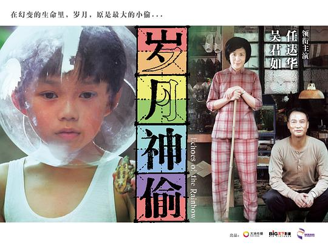

《岁月神偷》
导演：罗启锐
《岁月神偷》剧情简介:
60年代的香港，风云变幻。一面要忍受港英政府的压制，一面又受到内地运动的波及，更要面对不时登陆的台风暴雨。老字号的永利街就处在这样一个风暴的旋涡中心。
鞋匠罗一家四口，在街尾以做鞋为生。罗先生(任达华 饰）做得一手好鞋，在那个混乱的年代仅能养家糊口；罗太太（吴君如 饰）为人辛辣直率，人称“侠盗罗嫂”。大儿子罗进一（李治廷 饰）16岁，品学兼优，是运动会的冠军，全家人的希望，也是永利街的骄傲；小儿子罗进二（钟绍图 饰）8岁，在父母溺爱之下，天性顽劣，出了名的顽皮整蛊……一家人艰难度日，也算其乐融融。
然而大儿子与富家小姐芳菲（蔡颖恩 饰）之间一段纯美的初恋、一场扫荡整个香港的飓风暴雨、更有一场潜伏已久的噩梦，让这个普通家庭的平安幸福在一夜之间陡生变故、支离破碎……面对岁月这个最大的“神偷”，顽强不屈的人该如何去抵抗？